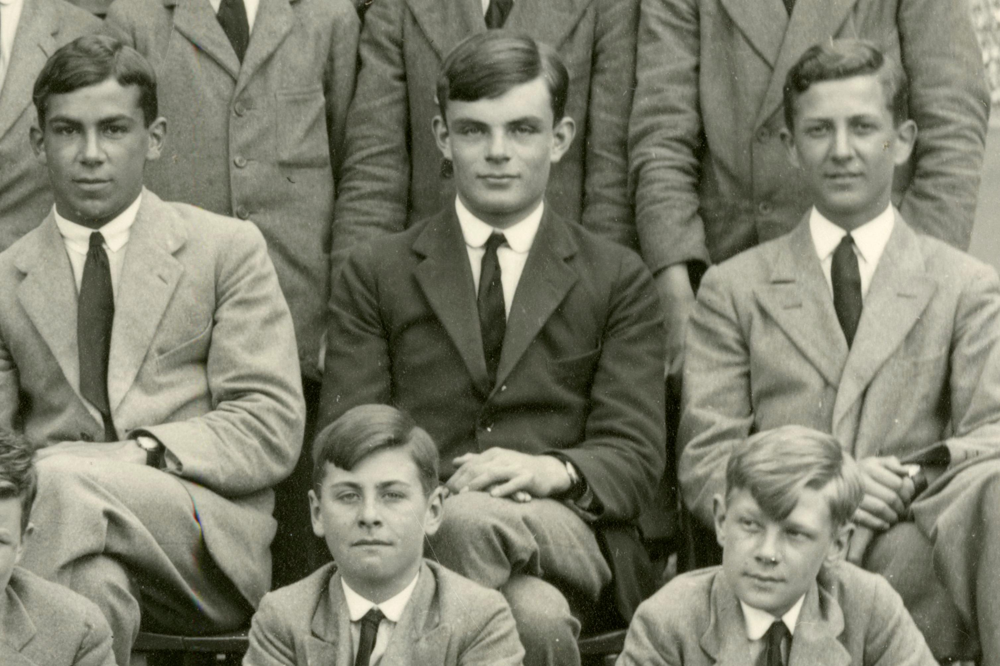

ALAN TURING
who is alan turing?
A mathematician and pioneer of theoretical computer science and artificial intelligence. He is consdidered as one of the fathers of computer science. One of his most well known accomplishments being, playing an instrumental role in the deafeat of Nazi Germany during WW2 as he helped break the crypto codes known as Enigma Code that were coming from the Germans.

Even though the impaxt of his work wasn't fully recognized before his death, today he is undeniably considered one of the most important figures in maths and computer science.

(23 June 1912 – 7 June 1954)
English
Mathematician, Programmer, Educator
~2020 aueb~
credits
credits